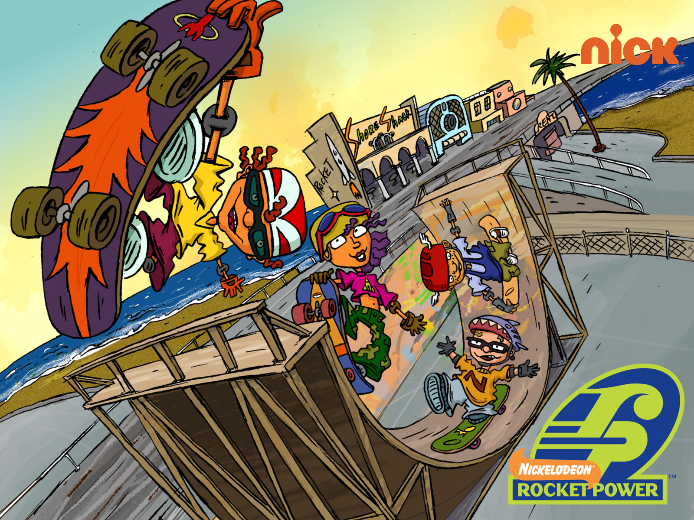

About Otto
Otto is an extreme sport athlete from california
Otto and his friends
Sports
- Surfing
- Skating
- moutain biking
- Paragliding
- climbing
Family and Friends
Otto has 3 best friends, an awesome dad and a cool uncle. Follow the links to learn more about them